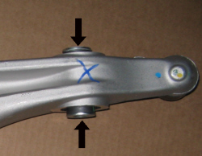
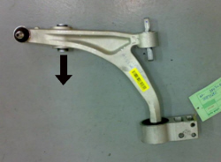

|
This test should be carried out when, following a road test there is a knocking noise from the front with a dull metallic sound from either one or both sides of the vehicle when driving over cobblestones at 20 - 30 Km/h. |
|
STEP |
CHECK TO BE PERFORMED |
REMEDIAL ACTION IF THE CHECK IS NOT OK |
|
1 |
Check on tightening torque Check that the fork-front arm bush torque tightening is correct on the side where the noise is coming from. Move on to Step 2 |
The torque tightening is lower than it should be (10 - 20 daNm), remove the fastening, clean any residues of grease from the washer for the bush (as indicated in Fig. 1) and the surfaces of the fork and tighten to the correct torque. |
|
2 |
Removing lower track control arm Remove the lower track control arm and place it with the bush in a vertical position (as illustrated in Fig. 2) Move the inner cover for the higher bush and check that it remains in position (does not move through the effects of gravity) Move on to Step 3 |
The cover moves under its own weight and therefore the track control arm should be replaced and move on to Step 4. |
|
3 |
Refitting lower track control arm Fit a new lower track control arm because no faults were discovered in the previous Steps. Move on to Step 4 |
|
|
4 |
Check on correct operation on the vehicle Carry out the check again to detect noise over cobblestones at 20-30 Km/h on the side where the repair was carried out. The test can be considered complete |
If the noise persists, follow the instructions in diagnostic tables S015, S016, S017. |

Fig. 1

Fig. 2